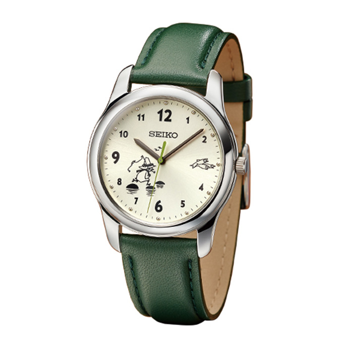
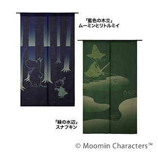
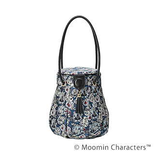
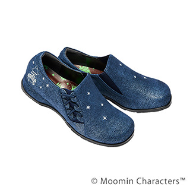

全24件中 1〜4件を表示
-

- セイコー スナフキン 釣り人の時間 オフィシャルライセンスウオッチ
- 旅人スナフキンは、人生の達人。風の吹くまま気の向くまま、ふらりと旅に出ては、釣りをしたり、詩や曲をつくったり・・何ものにもとらわれない自由な生き方は、永遠の憧れです。そんなスナフキンと共有する豊かな時間をイメージした、スペシャルな腕時計が誕生しました。
-

- ＜ムーミン谷のやすらぎ＞ 京染め工房の手染めのれん
- 「のれん」で楽しむムーミンの世界。光と影が戯れる軽やかな風情を楽しんで。森をゆくムーミンとリトルミイ、のんびりと釣りを楽しむスナフキン・・『ムーミン』に出てくる印象的な場面が、心なごむ2種類の「のれん」になりました。京都の熟練職人が一枚一枚手染めしたのれんは、そのまま飾るだけでムーミン谷さながらにお部屋の雰囲気を一新します。
-

- ミムラねえさん＆リトルミイ ふっくらかわいいランタン型バッグ
- おしゃれなミムラねえさんとキュートなリトルミイ、ふたりの個性をかわいいフォルムに込めたバッグが誕生しました。一番上のミムラねえさんは面倒見のいいしっかり者、末っ子のリトルミイは好奇心が強くていたずら好き・・ムーミンの世界を彩るふたりの姿をジャカード織で表現。自分らしいおしゃれのかたち、ミムラねえさんとリトルミイの気分で楽しんで。
-

- スナフキン 星空のおさんぽ デニム調レザーのやわらか4Eコンフォートシューズ
- 星空の下、のんびり過ごすスナフキン。夜空のようなネイビーのデニム調レザーに瞬く星とスナフキンの姿を刺繍であしらったコンフォートシューズです。足にやさしい８つの機能性はもちろん、シックなカラーが幅広いコーディネートにマッチして、大人の上質カジュアルを演出します。